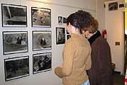

Legal Action
|

Censorship: The ELA Exposed
The Paper Trail: Correspondence about censorship

May 31, 2002
Dr. Richard P. Mills
Commissioner of Education
The State Education Department
89 Washington Avenue
Albany, New York 12234
Dear Dr. Mills,
It has come to our attention that literary selections used on the English Language Arts Regents Examinations, which all public high school students must take to graduate, have been inappropriately altered. This practice raises serious concerns. The tests' use of expurgated literary passages is a form of censorship that distorts the content and meaning of the original work. This clumsy effort to purge the Examinations of "politically incorrect" content, as described below, sends the message that certain words and subjects are taboo. The problem is compounded by the fact that the tests are often re-used in the classroom to prepare students for future exams, exposing more students to altered material. Testing students on inaccurate literary passages is an odd approach to measuring academic achievement. To any student even moderately familiar with the original passages and the rules of editing and attribution, the exam provides an object lesson in shoddy scholarship and intellectual dishonesty.
Our review of 24 prose excerpts used in the exams in the last 3 years shows that 19 have been altered in ways that distort the author's intent and the message of the original work. (An additional four have had words changed, paragraphs dropped, or disparate pieces of prose yoked together as a single essay.) References to race, religion, and ethnicity have been removed, along with physical descriptions of characters, references to sex, nudity, alcoholic beverages, and mild profanity. Speeches by public officials have been altered to remove anything arguably critical of the government. There is no indication in the selections that they have been altered in this way. (Representative examples of redacted materials are reproduced in an enclosed attachment.)
The deletions by definition remove information the author thought important to include or particular forms of expression or emphasis. As a result, beautiful prose has been converted into pedantic writing with mundane messages and stories are deprived of the words and characterizations that make them authentic, believable, and meaning-ful. Moreover, the deleted material is often germane to the questions on the exam. The deletions doubly disadvantage students who have read the original works. They would rightly be confused by the passage from Isaac Bashevis Singer which has been purged of references to Judaism, or by the absence of racial references in a passage from a book by Annie Dillard recounting her childhood visits to a local library frequented almost exclusively by African-Americans, and describing how these experiences awakened her sense of social justice.
The only plausible explanation is that the tests have been purged of anything remotely considered "politically incorrect" or controversial. Leaving aside questions of copyright law and fair use, we find the practice intellectually dishonest and at odds with a sound understanding of First Amendment principles. Those principles hold that government officials have no business censoring literary works in order to impose a "pall of orthodoxy" over the educational experience even if the literary works offend some readers. As the passages on recent Regents exams reveal, the Department of Education's practice robs the literary selections of both form and substance, since many works of insight or relevance will contain material that may offend someone. Students are deceived and intellectually impoverished by a censorship scheme that elevates hypersensitivity over truth. This is particularly ironic in a test that purports to measure students' ability to analyze and decipher literary messages and techniques.
We call on you to address this problem immediately, so that another class of students is not subjected to a test that is a parody of testing, as well as an unintended parody of political correctness. If the State of New York insists on giving stu-dents tests in language arts, and claims that the tests uphold standards of excellence, the least it can do is to respect the language chosen by the authors it quotes and the students who have worked hard to understand the craft and significance of literature.
Signed:
Art Eisenberg and Donna Lieberman
New York Civil Liberties Union
Joan Bertin
National Coalition Against Censorship
Larry Siems
PEN America Center
Ann Cook
NY Performance Standards Consortium
Jeanne Heifetz
Parents' Coalition to End High-Stakes Testing
On behalf of:
- American Booksellers Foundation for Free Expression, Chris Finan, President
- American Library Association Office of Intellectual Freedom, Judith F. Krug, Director
- Americans for Democratic Action, NYC Chapter, Evelyn Jones Rich, Chair, Education Committee
- Association of American Publishers, Pat Schroeder, President
- Feminists for Free Expression, Joan Kennedy Taylor, Vice-President
- Freedom to Read Foundation, Gordon Conable, President
- National Coalition Against Censorship, Joan Bertin, Executive Director
- National Coalition for Fair and Open Testing (FairTest), Monty Neill, Executive Director
- New York Civil Liberties Union, Donna Lieberman, Executive Director
- NY Performance Standards Consortium, Ann Cook
- Parents' Coalition to End High-Stakes Testing, Jeanne Heifetz, Co-Chair
- Peacefire, Bennett Hazelton, Webmaster
- PEN America Center, Larry Siems, Director, Freedom-to-Write Program
- People For the American Way Foundation, Ralph G. Neas, President, and People For the American Way Foundation/NY,Barbara Handman, Director
|  | ||||

|
||||